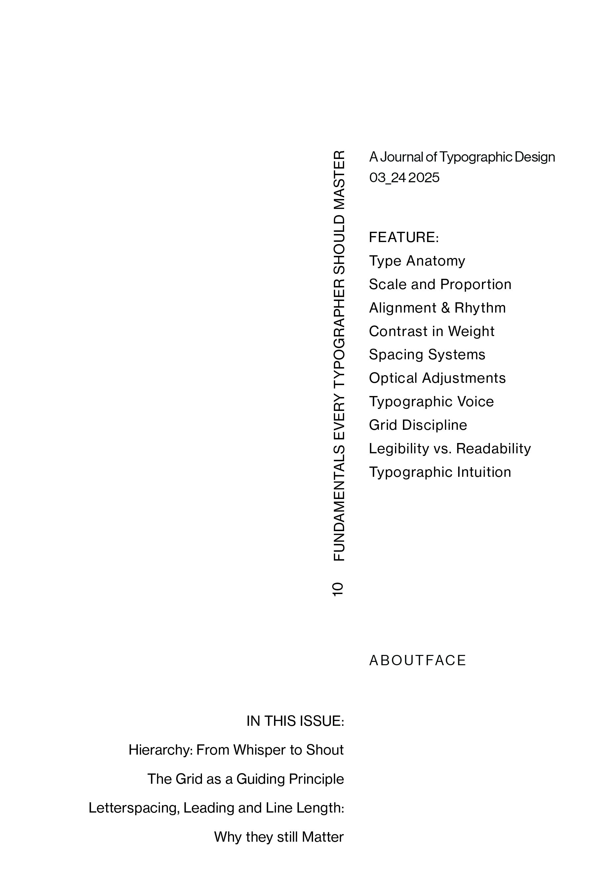
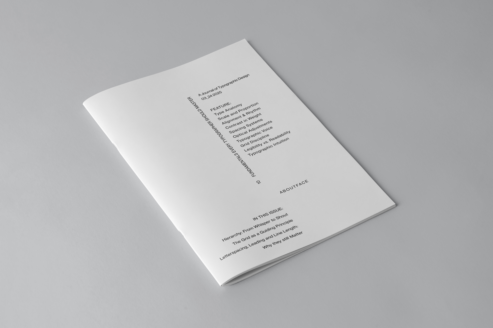
RULE 01: With scale and weight locked, hierarchy is dictated purely by negative space, tracking, orientation, and precise baseline alignment.
 Index
Index
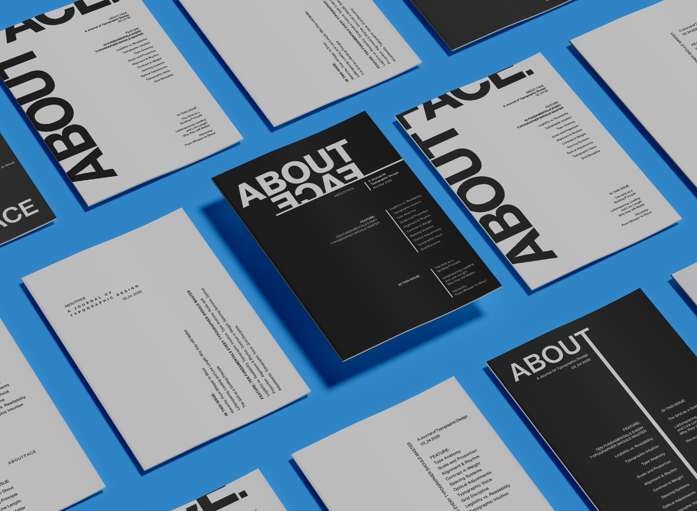
Editorial Design & Typographic Constraint System · 2026
AboutFace is a five-part editorial journal series exploring how visual hierarchy, rhythm, and spatial tension can be constructed when fundamental typographic variables are strictly restricted.
Each volume unlocks an additional design variable—moving systematically from single-weight spatial alignment to full typographic and geometric expression.


RULE 01: With scale and weight locked, hierarchy is dictated purely by negative space, tracking, orientation, and precise baseline alignment.
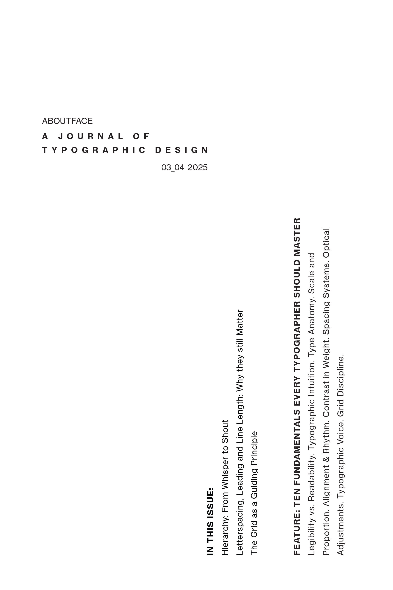
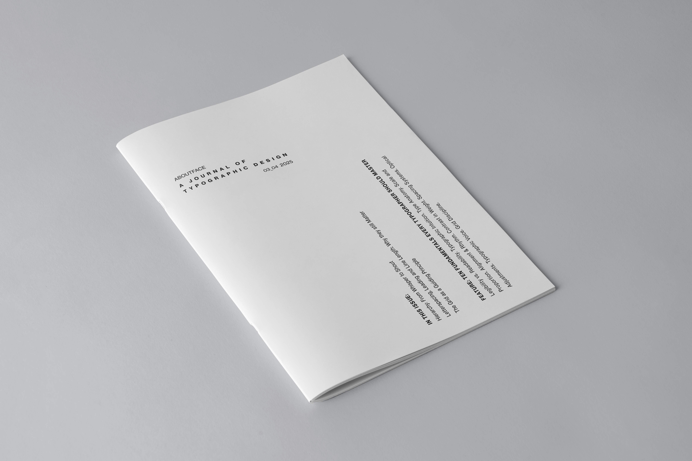
RULE 02: Introducing a secondary point size unlocks immediate optical scale contrast while maintaining monoline structural purity.
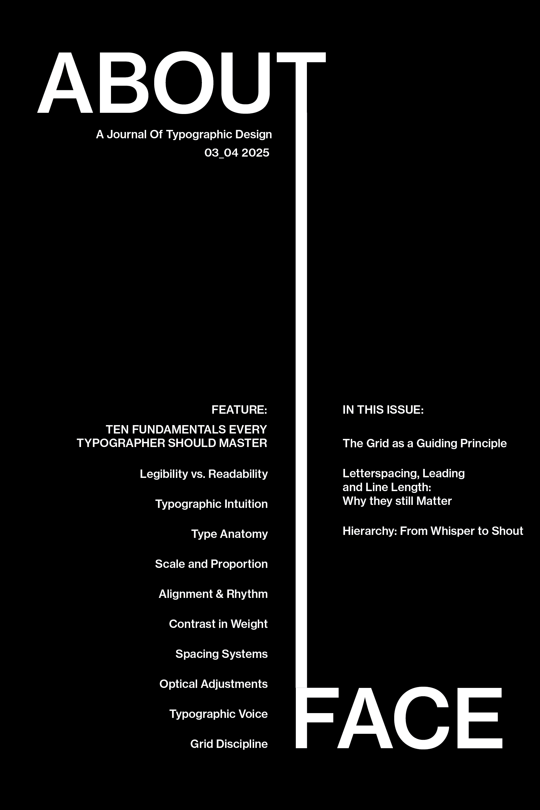
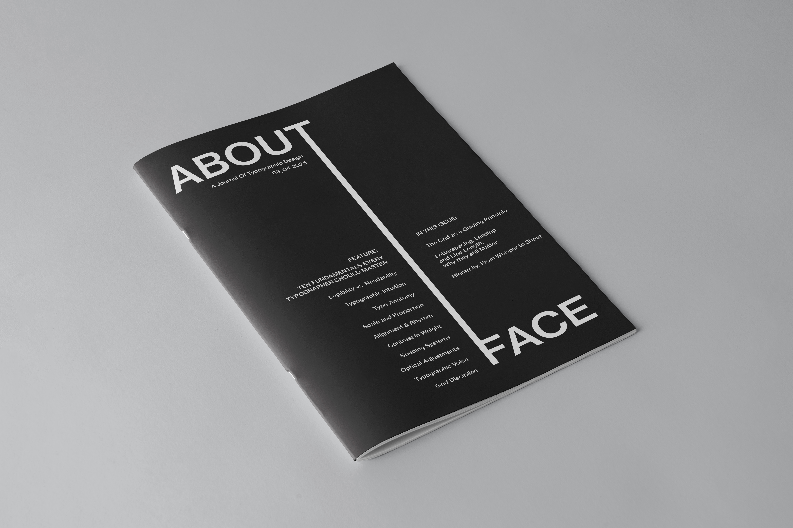
RULE 03: Contrast is achieved through visual density. Combining light and heavy weights establishes focal anchors without shifting type scale.
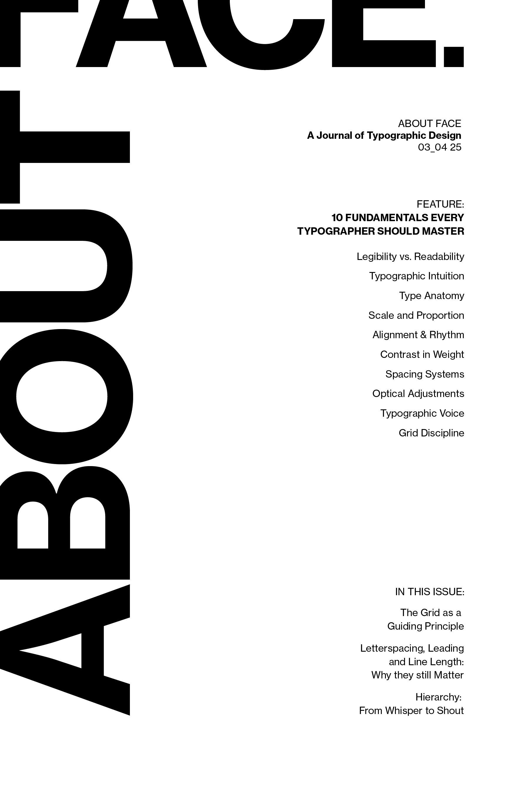
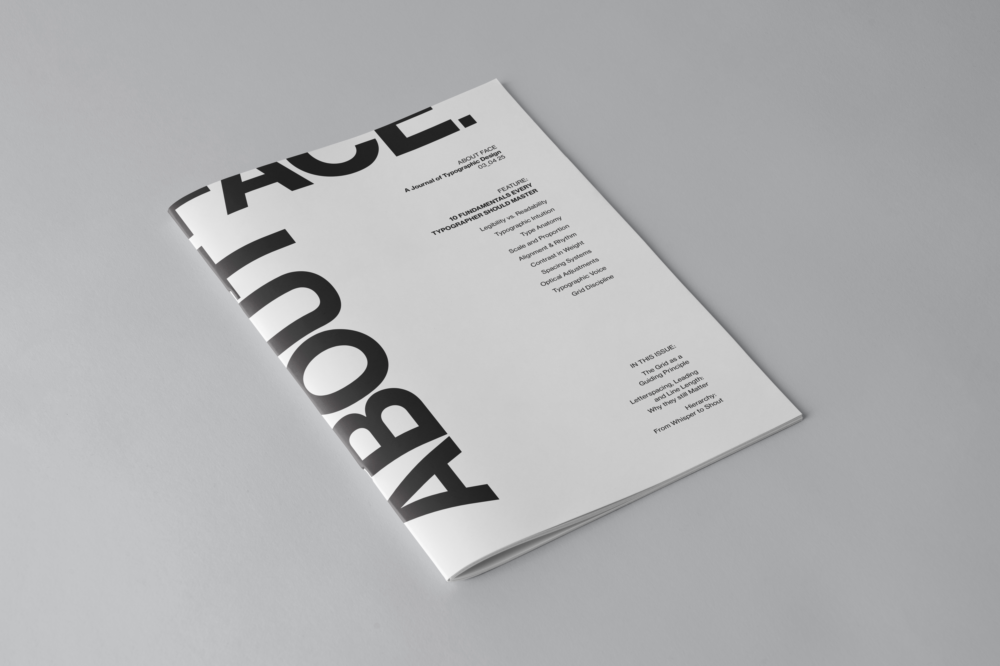
RULE 04: Dynamic interplay of scale and weight creates multiple layers of reading depth and typographic rhythm.
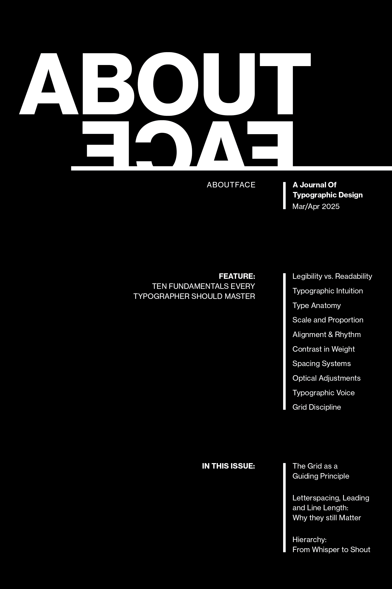
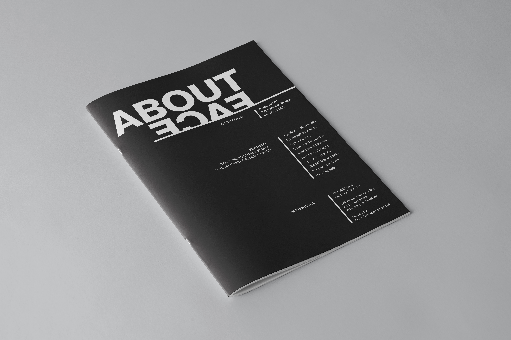
RULE 05: Unlocking multiple scales, weights, editorial rules, and geometric accents to craft an energetic cover composition while honoring the underlying grid.